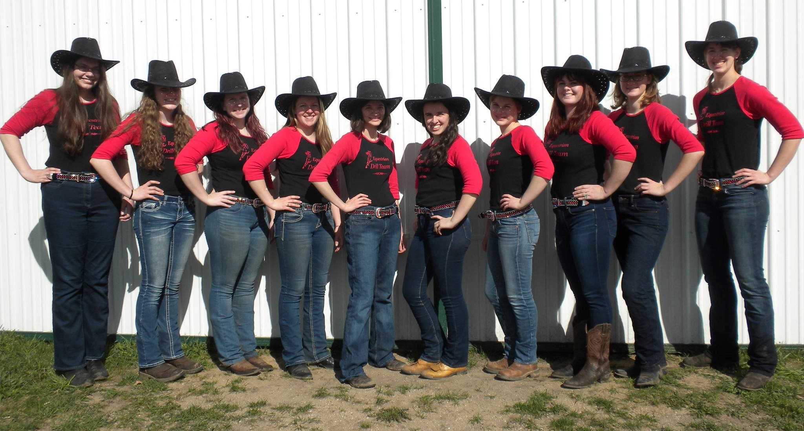

.jpg)
The Grinnell Equestrian Club is a student-run organization that's affiliated with Grinnell College. It's in its fourth year and shows no signs of ending any time soon, since it grows every year! It gives Grinnell students the
chance to take riding lessons and join a drill team. Drill team members run the club by managing its lesson program, teaching riding lessons, budgeting, fundraising, advertising, doing community outreach, holding events,
and mantaining a healthy relationship between the college, the club, and Triple V Stables. The drill team coach runs drill team and oversees all club functions.
The club's goal is to invite Grinnell College students to take part in this fantastic sport, ensuring that everything is as safe and fun as possible.
If you have questions, comments, concerns, or suggestions, please contact us; we'd love to hear from you! Our Facebook page is the best way to get up-to-date information about the club. Here's a link:
Three years ago, Grace had an idea which would change the lives of Grinnell's horse lovers. She'd boarded her horse, Honey, at Triple V Stables in Grinnell for her first two years at Grinnell. But
it was lonely; no other Grinnell students rode or boarded there. To find other equestrians at Grinnell, she wanted to teach riding lessons and start a drill team. Even though she could bring her sister's horse, Eclipse,
to Grinnell, she still only had two horses. However, Don loved her idea, and he generously offered to let her use his horses and arena. Some other boarders at Triple V were excited about the idea, and they let
drill team use their horses.
The drill team started out gigantic: 8 horses and riders, to be exact. As with most new clubs, the number of members fluctuated at first, and there were 6 by the end of the semester.
The team had its first performance and bonfire at Triple V in November 2015. It also had a successful spring semester and performance at the end of the year.
Fun fact: the picture to the right is of the team's
first ever practice. Two of those members are still on drill team; they include Maggie (pictured third from the left) and Rachel (pictured third from the right). Two others were on
the team until they graduated years later: Natalie (pictured fourth from the right) and Grace (pictured on the far right).
In the team's second year, it was flooded by new members. Some horses were no longer available, so the team had access to six horses for its ten riders. Grace decided to split the team into two pieces: the intermediate team and the advanced team. Newcomers would be on the intermediate team, and everyone else would be on the advanced team. This worked perfectly, allowing each team to improve at its own pace, and since neither team needed all six available horses, they had room to be a bit more selective about which horses were best for drill team.

Early that year, the club started having trouble with funding. It was funded by Grinnell College in its first year, but since the club was so popular, it had become more costly to support. Despite numerous attempts
to be recognized as a club sport by the college, which would provide better funding, equestrian club was repeatedly rejected, since it was such a new club. After countless
meetings with the college and two huge bake sales, the club kept itself afloat. It ended the semester with a performance at Triple V Stables.
Spring semester, both drill teams had the chance to perform at the Iowa Horse Fair. To prepare, they stayed on campus for half of spring break, riding, working, and having fun at the barn every day.
On March 31st, both teams woke at 5AM to load all the horses into trailers and leave for Des Moines. It was the beginning of three days full of shows, performances, and memories, only lacking in sleep.
Everyone agreed that the team had to come back next year, and everyone was incredibly thankful for the donations which made the weekend possible.
For its May performance, the club had its first fully-outdoor show, utilizing the huge grass arena. There was also a beginner drill team, which included 11 kids, aged 5-11, riding with drill team members
walking by their side. It was an adorable and fun event for everyone.
To everyone's relief, Grace decided to stay in Grinnell after she graduated and run the club for another year. Since she wasn't a student anymore, she needed someone to manage interactions between the club and the college, so a captain and two club leaders were appointed to handle these tasks. Again, the club filled to the brim with new members, and there continued to be two drill teams so that the club could accomodate everyone.
This fall semester started off with a seemingly insane idea - glow in the dark drill teams. Grace painstakingly sewed lights into the hoodies and jeans of every rider on drill, and the team hung some lights in the riding arena. After a semester of practice, both teams performed in the dark for their fall show at Triple V. In the dark, riders often couldn't see their own horses' ears, let alone anyone else's horses, and the horses were spookier because they couldn't see their surroundings either. Of course, drill team is packed with incredible riders who were thrilled to rise to the challenge.
Both drill teams returned to the Iowa Horse Fair in April, again having three performances: advanced performed twice, and intermediate performed once. For the first time, the advanced team took part in a drill team competition. Numerous drill teams competed, many with skills and experience far beyond Grinnell's, so even though Grinnell's team didn't place, advanced team felt honored to have participated. The Des Moines group of Grinnell College alumni came to see the competition, and the team was thrilled to meet them. The Iowa Horse Fair also held a stall-decorating competition; Grinnell came in second place. Overall, it was a fun and successful weekend. Drill team continually thanks all of our supporters, from Triple V to the club's friends to those who participate in our fundraisers. This was an unforgettable experience, and we couldn't have done it without each and every one of you!
The drill teams finished the year with another spring performance and beginner drill team for children.
At the end of the year, Grace announced that she now felt confident about the club's future and ability to survive on its own, so she had decided to move on to bigger and better things elsewhere. The club will miss her dearly, and they can't imagine equestrian club without her, but Steph, one of the lesson instructors (read about her on the "Take Lessons" page), is excited to become the new drill team coach, and Grace's other responsibilities have been distributed among drill team members.